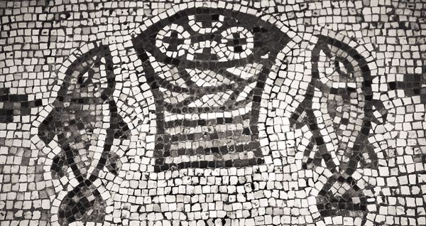

5.1. NARRATING THE STORY OF JESUS
Although the Gospel according to Mark appears second in the NT canon and is therefore sometimes called the Second Gospel, it is usually regarded as the first of the NT Gospels to have been written. For this reason, students of the Gospels have sometimes turned to it as not only the earliest but also the most historical of the narratives of Jesus’ ministry.
To some, Mark the Evangelist has appeared as little more than a chronicler, having put the story of Jesus’ career in written form for the sake of posterity. This view has been helped along by the ancient tradition stating that Mark served as Peter’s interpreter, writing down accurately, though not in order, Jesus’ sayings and deeds as related by Peter (Eusebius, Hist. Eccl. 3.39.15). Later, we will assess the importance of this tradition for the identification of the author of this Gospel. Here it is necessary to dispel any notion of Mark as having exercised nothing more than the chronicler’s craft. Mark himself wraps his presentation of Jesus in the robe of christological significance already in the opening line of the Gospel: “the beginning of the gospel of Jesus Christ, the Son of God, as it was written in the prophet Isaiah . . .” (Mark 1:1). It is immediately clear that Mark’s is no dispassionate, objective reporting of the life of Jesus. Rather, his narrative is transparently concerned with Jesus’ identity, and with the meaning of his person and work against a backdrop provided by the story of Israel and, especially, the proclamation of the prophet Isaiah.
Also in his introductory section, Mark takes a further step, revealing something about Jesus even more profound than this opening line might on its own suggest. The message Jesus proclaims is nothing less than “the good news of God” (1:14), and this indicates that the story of Jesus is at a more significant level the story of God’s activity. Mark’s Gospel is thus concerned with God’s intervention in history to bring to fruition the promises of Scripture and to inaugurate God’s reign and rule, his kingdom. In an ultimate sense, then, the Gospel of Mark is about God.
This observation intimates something important about Mark’s Gospel — namely, that Mark’s primary objective, and the primary basis of the authority of his narrative, rests in its capacity to speak on behalf of God. Historical events do not generally contain within themselves their own interpretation. This is true even of those events whose central character is Jesus of Nazareth. Mark’s narrative is a presentation of Jesus’ public career, to be sure, but it is one oriented toward providing a divine perspective on that career.
Like the other Evangelists, Mark must be seen as a communicator, drawing on and representing the traditional materials concerning Jesus to his audience in a way that will address the realities of their lives. In doing so, he wants ultimately to say something about God and the nature of God’s project in history. And in order to do this, he weaves a narrative whose primary focus falls on Jesus’ identity and ministry and the nature of discipleship, set within the horizons of the Scriptures on the one hand and fierce hostility on the other.
If Mark was the first Evangelist, then why did he choose to communicate in the form of a narrative? Other forms of response to community struggles had already been pioneered — Paul’s letters, for example. What realities led to Mark’s decision to sketch the public life of Jesus in the form of a biographical narrative? We might be helped by refocusing the question: What do narratives do well? Several answers are possible. First, they encourage in their audiences a sense of affinity, or identification, with their central character or characters. This is certainly true of the Gospel according to Mark, which invites its audience to identify with Jesus and, in a different way, to puzzle over the role of the disciples. Second, narratives are capable of indicating the rich interrelations among the many forces that help to shape human experiences in concrete situations. This is also true of Mark, who has woven together numerous forces — some mundane and personal, others cosmic and institutional — that together shape the lives of persons within the narrative as well as the outcome of the story. This phenomenon is perhaps most transparent in 14:21, where Jesus observes, “For the Son of man goes as it has been written of him, but woe to the one by whom the Son of man is betrayed!” Here Jesus grounds his passion in the Scriptures at the same time that he insists on the culpability of his betrayer. Third, narratives work to draw their audiences into their worlds so as to undergird shared values or to challenge the imaginations and views of their audiences, as well as their thoughts and practices. How the Gospel of Mark accomplishes this task becomes evident as we see how it has grappled with the identity of Jesus.
5.2. JESUS, THE DISCIPLES, AND THE AUTHORITIES IN MARK
Readers or hearers of the Gospel may perhaps be forgiven for imagining that, in writing his narrative, Mark struggled with how to present two, apparently conflicting, images of Jesus. In fact, the juxtaposition of these two images helps to determine the overall shape of the Gospel in a way that has resisted attempts to sketch an outline of its narrative. The Gospel communicates less through a structured outline than as a musical score that has woven together a leading melody and its countermelody. When the Gospel is viewed as a whole, most noticeable is its concern to portray the ministry of Jesus as a relentless progression of events leading to the crucifixion of the Messiah. Fully one-third of the Gospel is given over to the events of Jesus’ last days, marked by repeated prophecies of his coming suffering and death and a detailed and picturesque presentation of his passion. More than this, one encounters, already in the earlier chapters, intimations, implicit and explicit, of swelling malice against Jesus. As early as 2:18–20, Jesus anticipates his sudden, unexpected departure, and by 3:1–6 antagonism has progressed to the point that Mark can record, “The Pharisees went out and immediately conspired with the Herodians against him, how to destroy him.” Perhaps this is not surprising, since Mark had already noted the arrest of John, who spoke on God’s behalf, and would go on to relate John’s execution under Herod (1:14; 6:14–29). Clearly, from Mark’s vantage point, the ministry of Jesus cannot be understood apart from the cross, which casts its shadow back across the whole Gospel.
This is not the whole story, however. At the same time that it follows the Messiah’s journey to Golgotha, the Markan narrative is punctuated again and again with evidence of Jesus the popular miracle worker, powerful healer, and authoritative teacher. He casts out demons, astounds his own followers by walking on the Sea of Galilee, feeds the thousands, heals the blind and lame, and confounds those who listen to him by the nature of his teaching. Especially in the first half of the Gospel, the Evangelist often seems more interested in presenting Jesus in this way than in recounting the details of his healing ministry or the content of his proclamation. Using the narrative device of summary, he often prefers to tell his audience about Jesus the powerful teacher rather than show them, and to record the overwhelmingly positive and pervasive support Jesus attracted from the general populace. Even so, evidence of Jesus’ powerful ministry abounds, so that we are left with the impression that Jesus is the authoritative teacher who manifests the power of God, the herald of God’s rule in whose ministry the power of God has been made available.
Mark’s audience is left to wonder: powerful teacher and rejected Messiah — how can Jesus be both? The key to Mark’s narrative is to take it as a narrative, and this narrative both affirms that these two presumably competing portrayals are true and insists that Jesus’ true identity cannot be grasped apart from the correlation of these two portrayals. Jesus not only demonstrates power but also experiences rejection, suffering, and death. Indeed, Jesus’ activity as authoritative teacher and agent of miraculous power is the immediate cause of the hostility directed against him. He forgives sins by healing a paralytic, so that he is charged with blasphemy (2:1–12). He breaks the boundaries of conventional piety — eating with toll collectors and sinners, refraining from teaching his followers to fast and failing to keep the Sabbath — and on this basis is censured by the Pharisees monitoring his behavior (2:13–28). He heals on the Sabbath, and this serves as the impetus for the first recorded organized conspiracy against him (3:1–6). And so on. Even those who admit his power attribute it to the devil (3:22), while others request a sign in order to test him (8:11).
The integration of these two images of Jesus is demonstrated in another way as well. At the Gospel’s center point in ch. 8, Jesus asks his disciples, “Who do you say that I am?” (8:29). Taking account of the Markan narrative from its beginning to this point, we might agree with Peter in his profession of Jesus as the Messiah of God, and mean by it that Jesus is the long-awaited deliverer, the one through whom the power of God had come to visible expression. If Jesus the authoritative, power-working teacher constitutes the melody of Mark 1–8, however, the countermelody consists of those numerous anticipations of Jesus’ passion to which we have already called attention. Mark’s portrait in these first chapters is not as univocal as it might at first appear, then. Similarly, once Jesus attempts to qualify Peter’s understanding of his identity by drawing together into one whole the profession of messiahship with the plain prediction of the rejection and suffering he would experience (8:31–33), suffering and death enter the conversation regularly (especially 9:31; 10:31–34). But this does not signal the end of the miraculous in Mark’s narrative. Even these prophecies are indicative of Jesus’ status as God’s agent, supernatural portents accompany the crucifixion (see 15:38), and Mark’s Gospel closes with an account of the empty tomb (16:1–8). Even in the latter half of the Gospel, melody is matched with countermelody.
For Mark, these two portraits of Jesus — powerful wonder worker and suffering servant — are not contradictory, nor does one correct or exclude the other. Rather, together they disclose one fully integrated portrait of Jesus and his mission. Jesus goes to the cross as the worker of powerful deeds and authoritative teacher. These merge together in order to signify the full nature of his redemptive mission. “The Son of man came not to be served but to serve, and to give his life a ransom for many” (10:45).
Swirling around the fundamental issue of Jesus’ identity are two motifs, conflict and discipleship. It is not only at the pivotal point of the Gospel, in 8:27–29, that the question of Jesus’ identity comes to the fore. Following Jesus’ first episode of authoritative teaching, the crowds inquire of one another, “What is this?” (1:27). Demonic spirits have no need to ask such questions, for they perceive his identity already: “I know who you are, the Holy One of God!” (1:24; see 1:34; 5:7). Jesus silences these voices, not because their words are wrong but because they represent empty affirmations from beings who have positioned themselves over against Jesus’ ministry. Others ask, “Where did this man get all of this? What is this wisdom that has been given to him?” (6:2). “By what authority are you doing these things?” (11:28). “Are you the Messiah, the Son of the Blessed One?” (14:61). The narrator, Mark, is clear about Jesus’ identity, however. Jesus is the Messiah and Son of God (1:1), an affirmation that finds confirmation in the divine voice at Jesus’ baptism and transfiguration (1:11; 9:7).
The disciples do not understand. They may hold the mystery of the kingdom, they may be witnesses of Jesus’ powerful deeds, and they may have heard his predictions of rejection and death, but they have not been able to put these pieces together. Hence, they are stunned by Jesus’ mastery of the storm and sea: “Who is this, then, that even the wind and waves obey him?” (4:41). Is he a ghost (6:49)? Failing to understand the identity of Jesus and the nature of his message, they reject plain talk about his suffering (8:32), puzzle over his expectation of vindication (9:10), and repeatedly fail to comport themselves as befits those who follow a Messiah who resists the status quo on issues of honor and shame and even presents himself as a servant (see 9:33–41; 10:35–45).
The Markan story of the disciples, then, is repeatedly one of disappointment, with the disciples not only lacking in understanding but, often enough, actually standing in opposition to Jesus and his teaching. Instances of the motif of conflict branch out beyond the circle of Jesus’ followers, though, to include diabolic forces and, especially, the Pharisees and the Jewish and Roman authorities in Jerusalem. Particularly in Galilee, the Pharisees, together with supporters of Herod, are cast consistently in the role of Jesus’ opponents. The Pharisees monitor his behavior and question his teaching and ministry practices. They plot against him and seek to entrap him (see 2:1–3:6; 12:13). In the passion account, their role is taken over by the chief priests, scribes, and elders, who form a kind of triumvirate responsible for orchestrating Jesus’ final demise. Pilate participates in these affairs to do the crowds a favor, according to Mark, who thus underscores again the inexorable animosity of the Jewish elite in Jerusalem.
For Mark, the final confrontation between Jesus and his opponents is grounded in his attitude toward the temple. When Jesus is brought before the Sanhedrin, they bring forward false witnesses, certifying, “We have heard him say, ‘I will destroy this temple made with hands, and in three days I will build another not made with hands’” (14:58). While on the cross, Jesus is scorned with these words: “Aha! You who would destroy the temple and rebuild it in three days, save yourself, and come down from the cross!” (15:29–30). Finally, as Jesus breathes his last, Mark notes as the consequence of his death that “the veil of the temple was torn in two, from top to bottom” (15:38). This material concerned with the temple in Jesus’ passion is anticipated earlier in the narrative. First, Mark interweaves the account of Jesus’ cursing the fig tree with his action in the temple, as though to communicate that Jesus intended not simply to cleanse the temple but to curse it (11:15–21). The time of the temple had passed, for it had lost its fruitfulness. Second, when Jesus teaches his disciples about faith that can move mountains, his statement, “If you say to this mountain, ‘Be taken up and thrown into the sea . . .’” (11:23), can refer only to the mountain on which the temple was built. Finally, in Mark 13, Jesus portends the coming destruction of the temple as a historical event in keeping with God’s eschatological purpose.
Mark’s interest in the identity of Jesus is thus not a speculative affair, as though he were concerned merely with passing on a correct understanding of the Messiah. Instead, Mark’s narrative braids together these two strands, christology and discipleship, in order to show that how one understands the first will influence one’s understanding of the second (and vice versa). Against this backdrop, the motif of conflict serves a number of important roles in addition to adding suspense to the narrative. For example, that the Jewish elite actually side with the devil and his minions in opposing Jesus’ mission signals how far the institution of the temple and its supporters have departed from their service in God’s redemptive purpose. Moreover, Mark uses the motif of conflict to show that even Jesus’ followers are capable of misunderstanding and therefore opposing Jesus. Finally, Mark demonstrates that conflict is only to be expected when one identifies, as Jesus has, with God’s redemptive purpose, for this means adopting a form of life out of step with “this adulterous and sinful generation” (8:38).
5.3. MARK’S DRAMATIC NARRATIVE
Our earlier adoption of the image of the musical score for making sense of this Gospel does not prevent us from thinking in more general terms about the structure of the Gospel. In fact, the number of proposed outlines of this narrative almost equals the number of its interpreters! Most agree that the episode in Caesarea Philippi in 8:27–9:1 marks the pivot point of the Gospel, but beyond this viewpoints proliferate rapidly. In what follows, we will use broad categories in order to probe the unfolding of the Gospel’s drama in four parts.
5.3.1. Introduction: Jesus Is Messiah, Son of God (1:1–15)
The boundaries of Mark’s prologue are set by matching references to “gospel” (euangelion) in vv. 1 and 14–15:
The traditional location of Jesus’ baptism by John: Yardenit, on the Jordan River just south of the Sea of Galilee (Phoenix Data Systems, Neal and Joel Bierling)
The beginning of the gospel of Jesus Christ, the Son of God, as it was written in the prophet Isaiah (1:1);
Jesus came to Galilee proclaiming the gospel of God (1:14);
Repent and believe the gospel (1:15).
In this way, Mark announces that the significance of Jesus is rooted in these two titles, “Messiah” and “Son of God,” and in the message of Isaiah. What must not be overlooked is that though the Evangelist provides this perspective for his audience, it is not available to characters in the narrative other than Jesus. That is, Mark provides the primary interpretive point of view for understanding Jesus, but he does so for his readers and auditors, not for the disciples, the Pharisees, and others who enter the Gospel only with the beginning of the story proper in 1:16.
In other ways, too, Mark reads the importance of Jesus within the contours of Isaianic prophecy. Note the following parallels:
• The coming of John (compare 1:4–8 with Isaiah 40)
• The baptism of Jesus (compare 1:9–11 with Isa 42:1; 61:1)
• Jesus in the wilderness (compare 1:12–13 with Isaiah 40 and 65)
• Jesus’ proclamation of the gospel of God (compare 1:14–15 with Isa 40:9; 52:7; 61:1–2)
Mark thus signals the most profound connection between the promise of God’s salvation in Isaiah and the gospel or good news of Jesus Christ. And he demonstrates in his record of Jesus’ baptism that his understanding of Jesus is harmonious with the divine perspective: “You are my Son, the Beloved” (1:11). Jesus is God’s agent of salvation who heralds the presence of God’s dominion — but this is “insider information” to which characters within the narrative have no immediate access.
Mark 1:14–15 provides a programmatic summary of the message of Jesus: “The long-awaited time has been fulfilled; the kingdom of God has drawn near. Repent and believe the gospel!” Because of their location at the beginning of his narrative, and because of their status as a précis of his proclamation, these verses are key to Mark’s presentation of Jesus. On the one hand, Jesus’ message is directed backward, so that it embraces the hopes of Israel for divine intervention in history to bring peace and justice. On the other hand, this announcement points to the present breaking-in of this new reality in which God is king. Jesus’ mission is thus intimately related to the inauguration of God’s kingdom, and the accounts of teaching, healing, table fellowship, and calling and sending of the Twelve and even the lengthy description of Jesus’ suffering and death must be understood in this light. What is more, according to Mark’s synopsis of Jesus’ proclamation, the new era initiated by Jesus’ ministry has clear and present implications for life before God. People are to respond in light of this message, believing that God has come and embracing this new reality with their whole lives. As is typical of OT accounts of salvation, so here the activity of God is prevenient: People are to respond because the ancient project of God has been initiated in Jesus’ ministry — and not in order that God’s work might be established.
5.3.2. Jesus, Bearer of the Kingdom of God (1:16–8:26)
Mark uses this first major section of the narrative to flesh out the summary of his presentation of Jesus’ identity and message in the Gospel’s introduction. From the closing verses of Mark’s prologue we have evidence of Jesus’ status as the bearer of the divine kingdom. Now Jesus demonstrates what shape God’s dominion will take, and he does so through ministries of teaching and miracle-working. Indeed, the first eight chapters of the Gospel contain fifteen miracle stories, together with five editorial summaries concerned in part with Jesus’ healing activity and exorcisms. In the Markan perspective, teaching and healing are not so much separate activities as they are indications of the same reality. Through his presentation of Jesus’ ministry, Mark goes so far as to suggest that miracle-working has a pedagogical role — teaching people about the nature of God’s gracious intervention in the world and thus about the character of Jesus. The lessons of Jesus’ ministry do not come easily, however, but give rise rather to conflict and misunderstanding.
If the success of Jesus’ ministry were evaluated on the basis of public opinion polls, we would have to conclude that his work in Galilee was triumphant. Repeatedly, Mark asserts the pervasiveness of the positive response to his ministry: “the whole city gathered around the door,” “a great multitude from Galilee followed him,” “they came in great numbers from Judea, Jerusalem, Idumea, beyond the Jordan, and the region around Tyre and Sidon,” “people at once recognized him and rushed about that whole region,” and so on (1:32–34; 3:7–11; 6:53–56). Mark 3:8 is particularly compelling, since it describes the positive response to Jesus garnered from the populace of the whole area of Jewish settlement in the Holy Land. Such a response is hardly puzzling, though, given the character of Jesus’ ministry in this section of the Gospel.
Everywhere, Jesus’ status as a conqueror of evil comes to expression. He overcomes diabolic spirits and enables his followers to do the same (1:23–27; 5:1–20; 6:7; 7:24–30). Against his detractors, Jesus insists that his success in controlling demonic activity is due not to his collusion with Satan, but to his having entered into and plundered the house of the strong man, that is, the devil himself (3:27). The so-called nature miracles in chs. 4 and 6 are likewise evidence of Jesus’ power over evil. When we recall that “the sea” was symbolic in Jewish antiquity of chaos and evil (cf. Pss 65:7; 89:9; 106:9; Rev 21:1), Jesus’ calming of the storm and walking on the sea (4:35–41; 6:47–52) must be understood as much more than his mastery over the forces of nature. He is acting as God acts, manifesting his authority over evil powers. Indeed, during the storm, Jesus rebukes the wind and silences the sea just as he has rebuked and silenced demons in 1:25; 3:11–12.
Jesus’ popularity is also explained by his demonstrations of power by healing. He cures a fever, cleanses a leper, enables a paralytic to walk, heals a man with a withered hand, and more. No wonder, then, that the crowds were “astounded beyond measure, saying, ‘He has done everything well; he even makes the deaf to hear and the mute to speak’” (7:37). Moreover, he feeds the thousands — first with five loaves and two fish (6:33–44), then with seven loaves and a few small fish (8:1–10). Mark thus underscores Jesus’ compassion for the people as well as his capacity to provide for them as shepherds provide for the sheep under their care.

A mid-fifth-century pavement mosaic in a church at et-Tagbah on the Sea of Galilee, the traditional location of Jesus’ multiplication of loaves and fishes
Interestingly, these feeding episodes point beyond themselves to a further, important motif in this section of the Gospel. This is the crossing of purity lines, suggested in two different ways by these two accounts. On the one hand, it is worth remembering simply that mealtimes provided the center point of Jewish practices related to the concepts of clean and unclean. Meals were for nourishment, and this is clearly their importance in the instances of food provision Mark recounts. But meals were also highly significant social occasions, in which social boundaries and rankings were operative. What one ate and with whom — these tightly intertwined issues were at the heart of what it meant to observe the law and thus to be faithful to God. In this context, the episodes of feeding the masses are of interest for their complete lack of concern with such questions. Food was shared without regard for the normal concerns that governed the partaking and sharing of food. It is no wonder, then, that in 7:1–23 Jesus can declare all foods clean. Though his statement comes in a different setting, it nonetheless relates centrally to his meal practices with toll collectors and sinners (2:13–17) and his behavior regarding food in the open field. Such distinctions belong to the old age and are no longer relevant in light of the inbreaking kingdom of God. On the other hand, it should not escape our attention that the first feeding miracle takes place among Jewish people while the second is set within Gentile environs. Again, it is as though Mark were attempting to insist in this way that the kingdom of God brought near in the ministry of Jesus was devoid of even this distinction.
Mark 1:16–8:26 can be further divided into subsections that each begin with an episode concerned with disciples. 1:16–3:12 focuses on Jesus’ authority and the varied responses it attracts, emphasizing above all the growing hostility his ministry attracts from the Pharisees and supporters of Herod. 3:13–6:6 introduces a key distinction among Jesus’ varied audiences: Some are on the “inside” and thus receive special instruction, while others are on the “outside.” What is remarkable, though, is the degree to which this motif is weighted with irony — with the consequence that those who might be expected to be “on the inside” repeatedly fail in this respect. 6:7–8:26 is concerned mainly with the training of the disciples. Though Jesus remains the central figure, Mark repeatedly observes that the disciples are with Jesus; it is here, too, that the disciples participate firsthand in Jesus’ ministry after he has empowered them and sent them out. All three subsections begin with an emphasis on disciples and discipleship — the first recounting the call of the first disciples and their instantaneous obedience and willingness to identify completely with Jesus (1:16–20), the second narrating the choice of the inner group of disciples, the Twelve, to be with him and to be sent out by him (3:13–19), and the last describing Jesus’ sending of the Twelve to engage in ministries of proclamation, exorcism, and healing (6:7–13).
Built into the very structure of this section of the Gospel of Mark, then, is the importance of discipleship to the Markan project. If Mark is concerned with the identity of Jesus and the character of his mission, he is equally concerned with the implications of Jesus’ mission for the shape of discipleship. Unfortunately, throughout this section of the Gospel, the disciples rarely present themselves in any fashion that would invite emulation. To the contrary, they show themselves to be as concerned with issues of status and boundary-drawing as those who have not banded together with Jesus. By the end of this major section of the Gospel, the relationship between Jesus and his followers has deteriorated significantly. For this reason, the closing account of Jesus’ healing a blind man takes on parabolic significance within the Gospel. Touched by Jesus, this blind man is able to see somewhat, but he mistakes human beings for walking trees. He requires further intervention on Jesus’ part, just as the disciples will require more if they will be able to see clearly the nature of God’s activity in the ministry of Jesus.
5.3.3. The Road to Golgotha (8:27–15:41)
The Markan narrative takes a decisive, though not altogether unexpected turn with the unmistakable, obvious teaching of Jesus to his disciples regarding his impending demise. The death of Jesus was anticipated earlier, but now it breaks out onto the scene, rarely departing center stage as the story moves toward its finale. Interestingly, as Mark relates it, even this plain talk about the death of God’s Messiah is charged with meaning for would-be followers of Jesus, since discipleship is organically related to christology. This connection is perhaps most clear in three ways.
First, when the question of Jesus’ identity comes finally to a head, Peter, speaking for the whole band of Jesus’ disciples, professes Jesus as the Christ. This is followed by a dialogue between Jesus and Peter, the nature of which portends their incompatible understandings of Jesus’ divine destiny. Presumably having reflected on the portrait of Jesus as the powerful worker of miracles and bearer of the kingdom that has been so much of his experience since he attached himself to Jesus (in 1:16–20), Peter finds no room in his understanding of Jesus for motifs of suffering and death. He rebukes Jesus, but thus proves only that he is thinking like a mere human, without any access to the divine perspective. Jesus’ reply builds a bridge from the fate of Jesus, Messiah and suffering Son of Man, to the way of discipleship. In doing so, he emphasizes the importance of the reconstruction of a new identity, based on one’s association with Jesus rather than the relationships and emblems of status valued conventionally. One must also “take up the cross,” living as though one were, like Jesus, condemned to death, carrying the cross-arm to the place of crucifixion (8:27–38).
Second, not long afterward, James and John attempt to reserve places of honor at the table of the glorious kingdom of God. Their request belies their fallacious understanding of the identity of this man they have come to follow, and of the character of the kingdom he proclaims. They want to associate themselves with the honor that befits the Messiah. Apparently, they have heard nothing of his teaching about his imminent shameful death. Jesus replies first by instructing them in the ways of discipleship: “Whoever wishes to become great among you must be your servant”; then he comes to the high point of his argument and, indeed, of the whole Gospel’s perspective on his death: “The Son of Man came not to be served but to serve, and to give his life a ransom for many.” Jesus thus presents his own obedience to the mission given him by God and his own orientation to others as exemplary for those who would embrace the kingdom of God. He also indicates the depth of meaning that his death would carry; for Mark, the cross is not only exemplary for life among the people of God but is also the means by which persons might be included among the covenant people (10:32–45).
Third, the correlation between the Messiah and community of disciples is developed in the parallel between Jesus’ suffering in Mark 14–15 and the anticipated suffering of the community, related in Mark 13. Jesus’ teaching shows clearly that the suffering of the church in history is intimately related to the birth pangs of the coming of God’s dominion. The church will participate in the woes through which the new era of peace and justice breaks into the world — woes that have already begun in the passion of Jesus.
At least two pertinent observations flow from these parallels. First, it is clear that the new era prophesied by Jesus has already been inaugurated in Jesus’ own ministry. His suffering and death are not a contradiction of God’s plan, but actually serve to bring that plan to completion. What is more, the suffering of Jesus’ disciples must never be regarded as a contradiction of their status as disciples or dismissed as irrelevant to the divine purpose. The difficult times faced by Jesus’ disciples must now also be interpreted within the framework of the woes accompanying the birth of the kingdom. Again, then, we see that Mark has melded these two, christology and discipleship, into a single narrative thread.
Already it is clear that this second major section of the Gospel brings to the foreground the motif of Jesus’ suffering and death. This is accented by repeated references to the journey to Jerusalem, identified as the place of Jesus’ death. The centrality of the cross is marked by two related emphases. On the one hand, Mark is at pains to ensure that his audience faces the reality that Jesus goes to his death on account of his divine mission. Thus, Jesus repeatedly refers to his upcoming passion under the heading of “the divine must” (dei): “The Son of man must suffer many things . . .” (8:31; 9:31; 10:32–34). Moreover, the mural of Jesus’ death is painted with hues borrowed from OT promise. These include such specific texts as Zech 13:7 (cited in Mark 14:27) as well as the interpretive traditions associated with the Suffering Righteous One and the Suffering Servant. However, more than these, Mark seems to be concerned with the more simple, yet more profound, notion that the cross of Christ brings to consummation the will of God revealed in the Scriptures — all of them.
On the other hand, Jesus’ death is portrayed as the only possible destiny of one who has identified so radically with the divine will. And so the final chapters of Mark’s Gospel are taken up with tracing the crescendo of hostility that Jesus has attracted, particularly on his arrival in Jerusalem. Using language reminiscent of descriptions of rebellious Israel during the days of the exodus, Jesus identifies his own generation as a wicked generation (8:38). Set against the ways of God, they can hardly choose another path than to set themselves also against God’s Anointed One.
The narrative of Mark 8:27–15:41 proceeds in three discrete sections. The first, 8:27–10:52, highlights the motif of the journey to Jerusalem, with the language of traveling along “the way” repeated in 8:27; 9:33, 34; 10:1, 17, 32, 46, 52. This language is reminiscent of the reference to “the way of the Lord” in 1:1–3, and this invites our reflection on the journey of Israel from Egypt to the land of promise. The journey Mark portrays is, first, the journey of Jesus as he moves toward the goal set before him by God. It is also the journey of disciples, though, since it is along the way that Jesus instructs them. Interestingly, this section is bordered at the beginning and end by accounts of the healing of blind persons. Before the beginning of the journey, the blind man from Bethsaida is healed; it is from him, though, that we learn of the need for a second touch if genuine (in)sight is to be achieved. At the end of this section, Bartimaeus both receives his sight and joins Jesus “on the way.” The disciples, too, require a second touch if they are to lose their fuzziness of perception and receive eye-opening perceptiveness into Jesus’ identity and the nature of discipleship.
The plan of Herod’s Temple (adapted from Encyclopedia Judaica)
11:1–13:37 is no longer set “on the way”; rather, we find Jesus in and around the Jerusalem temple. Here the hostility against him reaches a new level as the Jerusalem elite react to the provocation of his teaching and actions in and against the temple. 14:1–15:41 serves in many ways as the climax of the Gospel of Mark, since it is to this series of events that the Gospel has been oriented. Like a litany, one hears again and again references to Jesus as Messiah and king set in proximity to his death. How could the Messiah suffer on the cross? The sixfold use of the term “king” with reference to Jesus (15:2, 9, 12, 18, 26, 32), combined with the threefold mockery of Jesus on the cross (15:29–32), signals the irony of the crucifixion scene. Jesus, condemned as a pretender to the throne, does indeed have royal status, but it is the sort of majesty that befits one who has proclaimed a kingdom that accords privilege to the “least among you” — the least, the lost, and the left out. Not surprisingly, then, it is the “little people” of Mark’s narrative who exercise insight into Jesus’ true station and mission — a woman who proleptically anoints Jesus’ body for burial and thus shows that she understands the nature of his mission far more than his most intimate followers do (14:3–9), Simon of Cyrene, who “takes up his cross” (15:21; cf. 8:34), and women who remain at the cross after the disciples have fled (15:40–41). These belong to the company of others in the Gospel according to Mark — a Gentile demoniac (5:19–20), an unclean woman (5:25–34), and a Syrophoenician woman (7:24–30), for example — whose roles are relatively minor, yet who have flashes of insight that mark them as Jesus’ true family.
5.3.4. Epilogue: He Is Risen! (16:1–8)
The Gospel according to Mark almost certainly ended with 16:8. Because this ending seemed so unsatisfying to later scribes, especially in light of the robust resurrection-and-appearance stories in the other NT Gospels, various attempts were made to provide a more suitable finale for the story of Jesus. In fact, however abrupt it may be, closing the Gospel with v. 8 provides a powerful way to end this Gospel — or, rather, to leave this story open-ended in a provocative way. In 15:42–47, Mark presents Joseph of Arimathea as a representative of the best of Judaism, motivated by Mosaic Law to undertake final arrangements for Jesus (see Deut 21:22–23). The manner of Jesus’ burial by Joseph is akin to that of a criminal, though that is rectified by Mary Magdalene, Mary mother of James, and Salome when they anoint Jesus’ body. This sequence of events provides the occasion for the encounter of these women with the angel at the tomb. The angel’s primary role is that of an interpreter — to remind the women, and Mark’s readers, of Jesus’ earlier words (see 14:27–28).
If Jesus’ crucifixion represents the climax of the Gospel of Mark, the scene at the empty tomb serves as its denouement. Mark brings together two important motifs. The first is the motif of the trustworthiness of Jesus as a prophet. If all other aspects of his prophetic utterances have come to fruition, then is it not reasonable to assume that his predictions of his own resurrection, and his return, would also take place? The second is the motif of failure of the disciples. Throughout Mark’s Gospel, Jesus’ followers have repeatedly fallen short in their comprehension of Jesus’ identity and mission and in their own practices as disciples. Now, at the end of the Gospel, these three women typify the response of the disciples as they react in fear and refuse to speak to anyone. On the one hand, Mark’s audience knows that, in the end, the women did speak of their encounter, since he has recorded it. Initial failure is no guarantee of ultimate failure, and the narrative strategy Mark employs portends the eventual faithfulness of the disciples, who have thus far made such a poor showing. On the other hand, these final verses speak more directly to Mark’s audience, inviting them, as it were, to complete the story he has begun. Mark thus lures his audience into self-reflection, to mull over the implications of this narrative for present-day discipleship. Will they respond in fear and silence like these disciples? Or will they embrace with confidence and boldness the gospel of Jesus Christ, Son of God, orient their lives around the new reality of the inbreaking kingdom of God, and invite others to do the same?
5.4. THE SETTING AND PURPOSE OF MARK’S GOSPEL
To speak definitively of the origin of Mark’s Gospel, it would be helpful to have complete and reliable information about such introductory matters as the identity of the Evangelist and his audience and when and where he wrote it. But we know nothing certain on any of these issues.
Like the other NT Gospels, this one is anonymous. The author makes no self-reference within the narrative by which we might identify him, nor has he “signed” his account. The title, “The Gospel according to Mark,” was added only decades after the Gospel’s completion. This anonymity may be the result of a deliberate decision on the part of the author — who thus directed attention away from his own creative contribution and toward the subject of his work, the coming of God in Jesus of Nazareth. It might signal as well the degree to which the material woven into the Gospel narrative, and perhaps even the basic framework of the Gospel itself, was traditional by the time it was recounted in this fashion. Alternatively, it might be that the author simply assumed that his audience knew who he was. These choices are not mutually exclusive, of course. At the same time, we should remind ourselves in the case of this last possibility that “authorship” was not so closely guarded a practice in antiquity as it has become in the last two or three centuries, especially in the West. Even if we should probably assign the completion of the Gospel of Mark in its final form to one person, this would preclude neither the heavy influence of tradition nor the role of the author’s own worshiping community in the unfolding of the narrative.
According to the earliest available tradition, this Gospel was written by “Mark,” the interpreter of Peter — so Eusebius quotes Papias, who himself credits “the Elder” as the source of this information (Eusebius, Hist. Eccl. 3.39.15). This tradition, which probably dates back to the opening decade (or decades) of the second century CE, is picked up and echoed in the latter part of that century by Irenaeus and Clement of Alexandria, for example. What do we learn from this information? In a serendipitous way, it points to the nature of Mark’s creative contribution, since “the Elder” reports that Peter passed on to his interpreter only “anecdotes” while Mark has provided a full-blown narrative. This encourages the view that Mark’s innovation consisted above all in the choice of episodes to recount and in the way he has woven them together to signal causality and purpose, rather than in the wholesale creation of episodes apart from the tradition available to them. There is no reason to reject out of hand the association of this Gospel with Peter, even if the picture painted by Eusebius must be regarded as overly simplistic. Mark, after all, is not providing a record of events for the sake of posterity, as though the written page was needed to replace oral tradition. Rather, he is presenting a narrative whose character is rhetorical, in the sense of having a persuasive intent. But who is this “Mark”? Markus was one of the most common names in the Roman world, so, again, we owe it to popular tradition that the “Mark” who came to be associated with the production of this Gospel is none other than the “John Mark” of Acts 12:12, 25; 13:13; 15:37–39; Phlm 24; Col 4:10; 2 Tim 4:11; 1 Pet 5:13 — and thus a sometime companion of both Paul and Peter.
In the end, however, little is gained by identifying the author of Mark’s Gospel as “Mark,” even if this person was in fact “John Mark.” This is because we know next to nothing about this Mark except what we can glean from the Gospel itself. In the terminology of literary study, the “author” of the Gospel of Mark to whom we have most direct access, then, is the “implied author,” that is, the implicit image of the author that shines in and through the narrative text itself. The author of Mark, for example, would thus clearly be one who could work in common Greek, and who possessed intimacy with the OT, particularly in its Greek version, and especially the Psalms, Isaiah, and Zechariah. The Evangelist seems to have a developed understanding of Judaism and Jewish practices, even if he writes to an audience that repeatedly needs to have both explained (e.g., 7:3–4; 12:18).
Nor can we speak with certainty about the date of the Gospel of Mark. Early tradition urges a date after Peter’s death in Rome, which is usually assumed to have been in 64 or 65 CE (Irenaeus, Haer. 3.1.1; see the anti-Marcionite prologue). For further evidence, scholars often turn to the text of Mark itself. Mark 13:14, with its instructions “to flee to the hills” at the destruction of Jerusalem, makes little sense in light of the historical realities of the Roman siege on Jerusalem. The Roman army had completely surrounded the city with a seamless blockade, making such an attempt at escape inadvisable and probably impossible. Similarly, that the “abomination of desolation” is not more directly related to the pillaging of the temple by Titus, the Roman commander, suggests that Mark 13 was written before the fall of Jerusalem in 70 CE. Consequently, many date the completion of the Gospel of Mark to the later 60s, during the Jewish War but before the destruction of Jerusalem.
Even this range of dates is helpful for grasping the purpose of Mark’s Gospel since it portends a climate of heightened tension. What sort of audience does the narrative imply? We can assume a predominately Christian audience — that is, an audience that would accept in at least some sense that Jesus is “Messiah, son of God,” since Mark begins his Gospel by presupposing this belief (1:1). Such an audience would have shared something of the author’s own familiarity with the OT, or at least we may presume that the author believed they would be capable of hearing his scriptural citations, allusions, and echoes. In addition, we may presume that Mark’s audience had some familiarity with (or expectation of) persecution. The courtroom scene in 8:34–38 intimates the existence of situations in which disciples might be called upon to disavow their association with Jesus. According to 13:9, legal interrogations by both Roman and Jewish authorities are the lot of Jesus’ followers. In addition, in 10:28–30 there is the surprising addition of a reference to “persecutions” in the list of “gifts” received by those who give up everything to follow Jesus. We may also refer to the warning concerning trouble and persecution in 4:17, as well as to the stark promise of 13:13: “You will be hated by all on account of my name.” Even if the exact nature of this persecution escapes us (local or widespread? methodical or random? official or informal?), affliction and unrest seem to characterize the experience of Mark’s audience. Indeed, the progression of Jesus’ instruction in ch. 13 makes good sense within the difficult historical circumstances of the late 60s, circumstances that would have fueled doubts and temptations of various kinds. Such experiences of duress would perhaps only naturally have raised questions about the nature of Jesus’ “victory,” the character of his power, and the shape of the kingdom he proclaimed.
Some might have found in these exigencies the impetus for a retreat into end-time speculation. Others might have heard the rebel call to take up arms and to join the cause against Rome. Still others might have been tempted to leave their faith in disillusionment. Jesus advises an alternative route: “The end is still to come. . . . This is but the beginning of the birth pangs” (13:7–8). Such trials provide the arena for alertness and watchfulness (13:5, 9, 23, 33, 37). These events furnish opportunities for discerning the presence of the kingdom of God (ch. 4) and for extending the mission to all nations (13:10). The measure of Jesus’ ministry embraced powerful acts of healing and authoritative teaching, to be sure, but also service on behalf of others as well as death.
One can go further. Perhaps the Markan narrative envisages persons who have already failed in the context of duress. Mark’s readers and hearers may have been struggling with present, concrete expressions of discipleship failure. This would help to make sense of the striking emphasis Mark places on the failure of Jesus’ inner circle of followers within the narrative. Such people would undoubtedly hear the Markan Gospel as good news. On the one hand, the failure (and anticipated restoration) of Jesus’ own disciples would have softened the blow of parallel instances of failure in later Christian communities. Failure need not be the most resounding or final word. On the other, the Gospel of Mark would allow its readers and hearers to locate the perplexity and pain of persecution against a wider interpretive horizon. Suffering, according to Mark’s narrative, is not a denial of one’s status before God or among the people of God. Jesus, as a part of his divine mission, journeys to Jerusalem with the full knowledge that entering Jerusalem can lead only to his shameful death.
Of course, neither does Mark attempt to glorify suffering, or urge that duress is the indisputable trademark of the faithful disciple of Jesus. Clearly, he envisions the possible death of disciples on account of their faithfulness in identifying with Jesus. But the fundamental issue for Mark is not one’s capacity or willingness to embrace suffering and death; he is no sadist, and he does not present Jesus as a masochist. Jesus’ central commitment is to fulfilling God’s purpose for him, to serving the will of God foretold in the Scriptures. In doing so, he becomes the object of controversy and hostility. So, too, must Jesus’ disciples reckon with the cost of living a life so radically oriented toward God in a “sinful generation” (8:38).
FOR FURTHER READING
Christopher Bryan, A Preface to Mark: Notes on the Gospel in Its Literary and Cultural Settings (Oxford: Oxford University Press, 1993)
Robert A. Guelich, Mark 1–8:26 (Word Biblical Commentary 34A; Dallas: Word, 1989)
Robert H. Gundry, Mark: A Commentary on His Apology for the Cross (Grand Rapids: Eerdmans, 1993)
Larry W. Hurtado, Mark (New International Biblical Commentary; Peabody: Hendrickson, 1989)
Joel Marcus, Mark (Anchor Bible; New York: Doubleday, 2000-)
W. R. Telford, The Theology of the Gospel of Mark (Cambridge: Cambridge University Press, 1999)